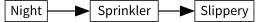
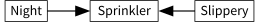
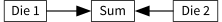
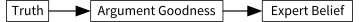

❦
Scenario 1: Barry is a famous geologist. Charles is a fourteen-year-old juvenile delinquent with a long arrest record and occasional psychotic episodes. Barry flatly asserts to Arthur some counterintuitive statement about rocks, and Arthur judges it 90% probable. Then Charles makes an equally counterintuitive flat assertion about rocks, and Arthur judges it 10% probable. Clearly, Arthur is taking the speaker’s authority into account in deciding whether to believe the speaker’s assertions.
Scenario 2: David makes a counterintuitive statement about physics and gives Arthur a detailed explanation of the arguments, including references. Ernie makes an equally counterintuitive statement, but gives an unconvincing argument involving several leaps of faith. Both David and Ernie assert that this is the best explanation they can possibly give (to anyone, not just Arthur). Arthur assigns 90% probability to David’s statement after hearing his explanation, but assigns a 10% probability to Ernie’s statement.
It might seem like these two scenarios are roughly symmetrical: both involve taking into account useful evidence, whether strong versus weak authority, or strong versus weak argument.
But now suppose that Arthur asks Barry and Charles to make full technical cases, with references; and that Barry and Charles present equally good cases, and Arthur looks up the references and they check out. Then Arthur asks David and Ernie for their credentials, and it turns out that David and Ernie have roughly the same credentials—maybe they’re both clowns, maybe they’re both physicists.
Assuming that Arthur is knowledgeable enough to understand all the technical arguments—otherwise they’re just impressive noises—it seems that Arthur should view David as having a great advantage in plausibility over Ernie, while Barry has at best a minor advantage over Charles.
Indeed, if the technical arguments are good enough, Barry’s advantage over Charles may not be worth tracking. A good technical argument is one that eliminates reliance on the personal authority of the speaker.
Similarly, if we really believe Ernie that the argument he gave is the best argument he could give, which includes all of the inferential steps that Ernie executed, and all of the support that Ernie took into account—citing any authorities that Ernie may have listened to himself—then we can pretty much ignore any information about Ernie’s credentials. Ernie can be a physicist or a clown, it shouldn’t matter. (Again, this assumes we have enough technical ability to process the argument. Otherwise, Ernie is simply uttering mystical syllables, and whether we “believe” these syllables depends a great deal on his authority.)
So it seems there’s an asymmetry between argument and authority. If we know authority we are still interested in hearing the arguments; but if we know the arguments fully, we have very little left to learn from authority.
Clearly (says the novice) authority and argument are fundamentally different kinds of evidence, a difference unaccountable in the boringly clean methods of Bayesian probability theory. For while the strength of the evidences—90% versus 10%—is just the same in both cases, they do not behave similarly when combined. How will we account for this?
Here’s half a technical demonstration of how to represent this difference in probability theory. (The rest you can take on my personal authority, or look up in the references.)
If P(H|E1) = 90% and P(H|E2) = 9%, what is the probability P(H|E1, E2 )? If learning E1 is true leads us to assign 90% probability to H, and learning E2 is true leads us to assign 9% probability to H, then what probability should we assign to H if we learn both E1 and E2? This is simply not something you can calculate in probability theory from the information given. No, the missing information is not the prior probability of H. The events E1 and E2 may not be independent of each other.
Suppose that H is “My sidewalk is slippery,” E1 is “My sprinkler is running,” and E2 is “It’s night.” The sidewalk is slippery starting from one minute after the sprinkler starts, until just after the sprinkler finishes, and the sprinkler runs for ten minutes. So if we know the sprinkler is on, the probability is 90% that the sidewalk is slippery. The sprinkler is on during 10% of the nighttime, so if we know that it’s night, the probability of the sidewalk being slippery is 9%. If we know that it’s night and the sprinkler is on—that is, if we know both facts—the probability of the sidewalk being slippery is 90%.
We can represent this in a graphical model as follows:

Whether or not it’s Night causes the Sprinkler to be on or off, and whether the Sprinkler is on causes the sidewalk to be Slippery or unSlippery.
The direction of the arrows is meaningful. Say we had:

This would mean that, if I didn’t know anything about the sprinkler, the probability of Nighttime and Slipperiness would be independent of each other. For example, suppose that I roll Die One and Die Two, and add up the showing numbers to get the Sum:

If you don’t tell me the sum of the two numbers, and you tell me the first die showed 6, this doesn’t tell me anything about the result of the second die, yet. But if you now also tell me the sum is 7, I know the second die showed 1.
Figuring out when various pieces of information are dependent or independent of each other, given various background knowledge, actually turns into a quite technical topic. The books to read are Judea Pearl’s Probabilistic Reasoning in Intelligent Systems: Networks of Plausible Inference1 and Causality: Models, Reasoning, and Inference.2 (If you only have time to read one book, read the first one.)
If you know how to read causal graphs, then you look at the dice-roll graph and immediately see:
P(Die 1, Die 2) = P(Die 1) × P(Die 2)
P(Die 1, Die 2|Sum) ≠ P(Die 1|Sum) × P(Die 2|Sum).
If you look at the correct sidewalk diagram, you see facts like:
P(Slippery|Night) ≠ P(Slippery)
P(Slippery|Sprinkler) ≠ P(Slippery)
P(Slippery|Night, Sprinkler) = P(Slippery|Sprinkler).
That is, the probability of the sidewalk being Slippery, given knowledge about the Sprinkler and the Night, is the same probability we would assign if we knew only about the Sprinkler. Knowledge of the Sprinkler has made knowledge of the Night irrelevant to inferences about Slipperiness.
This is known as screening off, and the criterion that lets us read such conditional independences off causal graphs is known as D-separation.
For the case of argument and authority, the causal diagram looks like this:

If something is true, then it therefore tends to have arguments in favor of it, and the experts therefore observe these evidences and change their opinions. (In theory!)
If we see that an expert believes something, we infer back to the existence of evidence-in-the-abstract (even though we don’t know what that evidence is exactly), and from the existence of this abstract evidence, we infer back to the truth of the proposition.
But if we know the value of the Argument node, this D-separates the node “Truth” from the node “Expert Belief” by blocking all paths between them, according to certain technical criteria for “path blocking” that seem pretty obvious in this case. So even without checking the exact probability distribution, we can read off from the graph that:
P(truth|argument, expert) = P(truth|argument).
This does not represent a contradiction of ordinary probability theory. It’s just a more compact way of expressing certain probabilistic facts. You could read the same equalities and inequalities off an unadorned probability distribution—but it would be harder to see it by eyeballing. Authority and argument don’t need two different kinds of probability, any more than sprinklers are made out of ontologically different stuff than sunlight.
In practice you can never completely eliminate reliance on authority. Good authorities are more likely to know about any counterevidence that exists and should be taken into account; a lesser authority is less likely to know this, which makes their arguments less reliable. This is not a factor you can eliminate merely by hearing the evidence they did take into account.
It’s also very hard to reduce arguments to pure math; and otherwise, judging the strength of an inferential step may rely on intuitions you can’t duplicate without the same thirty years of experience.
There is an ineradicable legitimacy to assigning slightly higher probability to what E. T. Jaynes tells you about Bayesian probability, than you assign to Eliezer Yudkowsky making the exact same statement. Fifty additional years of experience should not count for literally zero influence.
But this slight strength of authority is only ceteris paribus, and can easily be overwhelmed by stronger arguments. I have a minor erratum in one of Jaynes’s books—because algebra trumps authority.